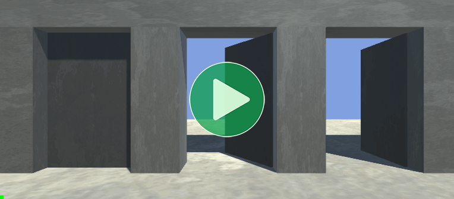

Location: Samples/02 Fine Control/03 Doors
Recommended After: Quick Play
Learning Outcomes: in this sample you will learn:
How to implement doors that can open and close.
How to implement a generalised interface for interacting with objects.
How to use the
SoloAnimationcomponent.
Summary
This sample demonstrates how you can use the SoloAnimation component and some simple scripting to create a system for doors that can be opened and closed, can start in any state, and can show the starting state in Edit Mode.

- The doors start in different states: closed (left), 60% open (middle), and fully open (right).
- Clicking on a door toggles its state.
- Since the middle door starts closer to fully open than closed, the first interaction closes it.
- On the last door we also see that it can be interrupted at any time to change direction.
Overview
This sample uses an Interface to keep the animation control code separate from the user input code. Keeping different responsibilities separate like this is known as "decoupling" and is helpful for writing flexible and bug free code.
The IInteractable Interface simply defines an object with an Interact method:
public interface IInteractable
{
void Interact();
}
ClickToInteract allows the user to interact with any IInteractable by clicking on it:
using UnityEngine;
public class ClickToInteract : MonoBehaviour
{
protected virtual void Update()
{
if (!SampleInput.LeftMouseUp)
return;
Ray ray = Camera.main.ScreenPointToRay(SampleInput.MousePosition);
if (Physics.Raycast(ray, out RaycastHit raycastHit))
{
IInteractable interactable = raycastHit.collider.GetComponentInParent<IInteractable>();
interactable?.Interact();
}
}
}
Door implements IInteractable to be controlled by the above system:
using Animancer;
using UnityEngine;
[SelectionBase]
public class Door : MonoBehaviour, IInteractable
{
[SerializeField] private SoloAnimation _SoloAnimation;
public void Interact()
{
if (_SoloAnimation.Speed == 0)
{
bool playForwards = _SoloAnimation.NormalizedTime < 0.5f;
_SoloAnimation.Speed = playForwards ? 1 : -1;
}
else
{
_SoloAnimation.Speed = -_SoloAnimation.Speed;
}
_SoloAnimation.IsPlaying = true;
}
}
Those scripts create a straightforward chain of logic:
- The player clicks the mouse.
ClickToInteractuses aPhysics.Raycastto find out what the mouse is pointing at.- If that ray hits something with an
IInteractablecomponent, it callsInteracton that component. - The
Interactmethod on aDoorplays its animation to toggle it between open and closed with each interaction.
{kind=link}
Solo Animation
The Door-Open animation rotates the door from closed to open and we don't have a second animation to close it again. So to create a system that can both open and close we can simply manipulate it's Speed to play forwards or backwards as necessary.
Since there's only one animation involved, we can use a SoloAnimation component to play it instead of an AnimancerComponent. This gives better performance by avoiding all of Animancer's usual overhead that would be involved in managing and blending between multiple animations.
Much like a Transition, a SoloAnimation has several Inspector fields which can be used to configure it without needing a script.
| Field | Usage |
|---|---|
Animator |
Just like an AnimancerComponent, SoloAnimation needs an Animator to actually play the animation on. |
Clip |
This sample used the Door-Open animation. |
Normalized Start Time |
The animation moves the door from closed to open, so value essentially defines how open the door is on startup. |
Speed |
SoloAnimation would normally play its animation on startup, but we don't want every door to open immediately so we set this value to 0. |
Apply In Edit Mode |
Having this enabled allows us to see the starting pose of the animation in Edit Mode, which means we can use the Normalized Start Time to control how far open the door is while editing the scene. The Playing in Edit Mode page explains how this can be done with an AnimancerComponent as well. |
Stop On Disable |
This sample doesn't involve disabling the doors, so this toggle is disabled. Otherwise, when the scene unloads and the doors are destroyed they would waste a tiny bit of performance rewinding the animation to the start. Unfortunately, Unity doesn't give us any way to properly determine whether the object is being destroyed or not during OnDisable. |
Having Apply In Edit Mode enabled means that the Inspector also shows the details of the Playable Graph while in Edit Mode. This is the SoloAnimation equivalent of the Live Inspector.
Interaction System
We could have just hard coded the interaction system in the Door script or controlled it using UI Buttons, but in the interest of encouraging good practices rather than simply getting the job done quickly this sample uses a more modular approach.
The ClickToInteract component is a somewhat hacky substitute for whatever mechanism you might use to trigger interactions in a real game. It has a fairly simple Update method which waits for the user to Left Click then uses a raycast to determine what they clicked on and tries to find a component that implements the IInteractable Interface attached to that object or any of its parents. If it finds something, it calls the Interact method on that component, whatever it may be.
This allows the interaction system to be decoupled from the actual interactable objects. It has no idea what kinds of things can be interacted with or what they will do, it just tells them when it's interacting with them. We could add more different types of interactable objects without touching the interaction system or we could change the interaction system without touching the interactable objects. For example, First Person Shooter games wouldn't want Left Click to trigger interactions, they commonly use E instead (since it's near WASD on a QWERTY keyboard) and instead of using an infinite length raycast they commonly limit interactions to a short distance in front of the player. But Doors don't need to know about either of those changes, they just open and close when something tells them to.
We could test this system by writing a very simple script that implements the IInteractable interface to log a message and putting it on a cube in the scene (or any object with a Collider):
using UnityEngine;
namespace Animancer.Samples.FineControl
{
public class ClickMe : MonoBehaviour, IInteractable
{
public void Interact()
{
Debug.Log("You interacted with " + name);
}
}
}
The Namespace is necessary because the IInteractable Interface is located in that namespace. Alternatively, you could put using Animancer.Samples.FineControl; at the top of the script, or specify the full name of Animancer.Samples.FineControl.IInteractable when refering to it.
A more complex interaction system might give the Interact method a parameter for details about the triggering object. For example, in addition to the animation it uses on itself, a Door could have a Humanoid-Door-Open animation which it plays on the character who interacts with it. A Lever might do something similar to allow people to pull it. And so on, all without the character needing to hold interaction animations for every possible object. Or the responsibility could be reversed: still give the Door or Lever its corresponding humanoid animation, but simply expose it as an InteractionAnimation property in the IInteractable Interface so that when a character triggers the interaction they can also check if there's an animation they need to play.
Door
With that interaction system in place, we can now implement an IInteractable component for the Doors:
public class Door : MonoBehaviour, IInteractable
{
It references the SoloAnimation component we want to control.
[SerializeField] private SoloAnimation _SoloAnimation;
And its only method is the Interact method required by IInteractable:
public void Interact()
{
Since we set the Speed to 0 in the SoloAnimation Inspector, we can use that to determine whether this is the first time the door was interacted with or not.
On the first interaction, we want to play forwards to open the door if it was less than 50% open, otherwise we play backwards.
if (_SoloAnimation.Speed == 0)
{
bool playForwards = _SoloAnimation.NormalizedTime < 0.5f;
_SoloAnimation.Speed = playForwards ? 1 : -1;
}
On each interaction after that, we set the speed to the negative of its current value so it flips between 1 and -1.
else
{
_SoloAnimation.Speed = -_SoloAnimation.Speed;
}
We also need to make sure it's playing because the SoloAnimation will automatically pause itself when it reaches the end of the animation (unlike an AnimancerComponent).
_SoloAnimation.IsPlaying = true;
}
}
The full script looks like this:
using Animancer;
using UnityEngine;
public class Door : MonoBehaviour, IInteractable
{
[SerializeField] private SoloAnimation _SoloAnimation;
public void Interact()
{
if (_SoloAnimation.Speed == 0)
{
bool playForwards = _SoloAnimation.NormalizedTime < 0.5f;
_SoloAnimation.Speed = playForwards ? 1 : -1;
}
else
{
_SoloAnimation.Speed = -_SoloAnimation.Speed;
}
_SoloAnimation.IsPlaying = true;
}
}
Conclusion
The SoloAnimation component is useful for efficiently playing a single animation as long as that's all you need. It technically allows you to change the Clip, but doing so it much less efficient than playing a second animation inside the AnimancerComponent would be.